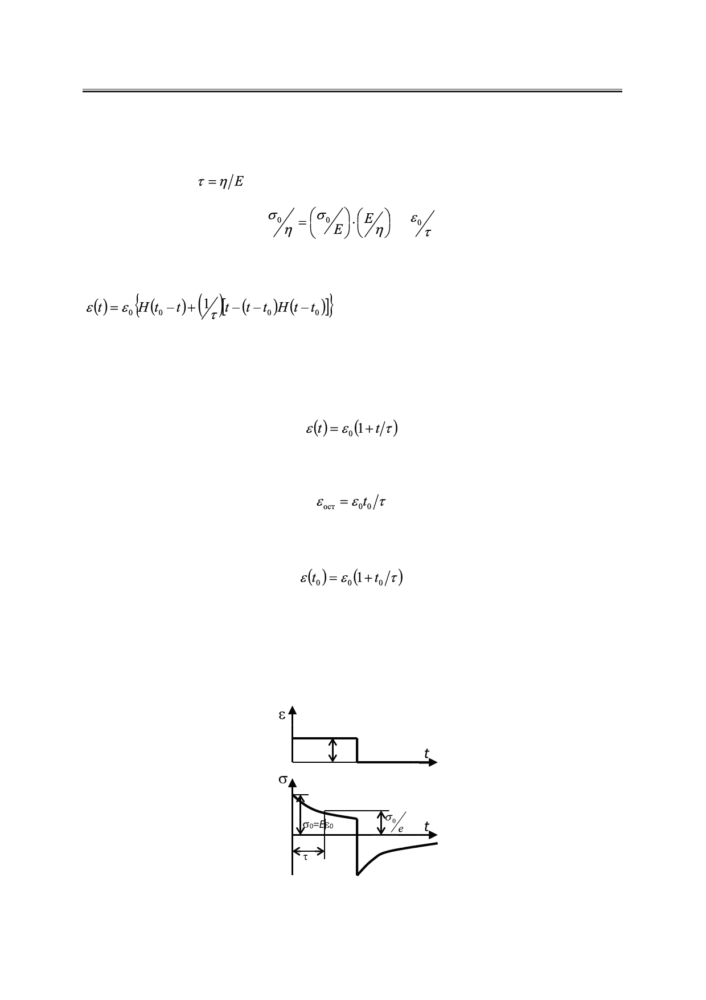

В.Д. Карлов
При вычислении интегралов в (9) следует проявить особую внимательность: необ-
ходимо перевести t0 в нижний или верхний пределы в зависимости от значений времени
t относительно t0 и далее воспользоваться соотношениями (2) и (3). Если ввести также
время релаксации
и учесть, что
то из (9) окончательно находим:
=,
, t > 0.
(10)
Это и есть общая формула, описывающая деформацию в модели Максвелла в полном
интервале времени t >0 (рис. 2).
Для интервала времени 0 ≤ t <t0 имеем из (10):
.
Остаточная деформация после снятия напряжения (t > t0) есть:
;
деформация в момент времени t0 (t → t0 − 0, так что Н(t - t0) → 1) равна
.
Постоянная деформация (модель Максвелла)
Пусть в начальный момент времени (при t = 0) модели дана мгновенная постоянная
деформация ε0, действующая до момента времени t0, снимается график зависимости на-
пряжения и деформации от времени (рис. 3).
Рис. 3. Графики зависимости напряжения и деформации от времени
в случае действия постоянной деформации на модель Максвелла.
Российский технологический журнал 2017 Том 5 № 5
55